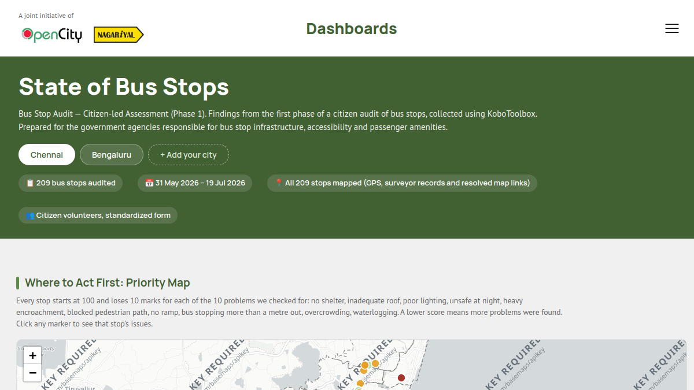
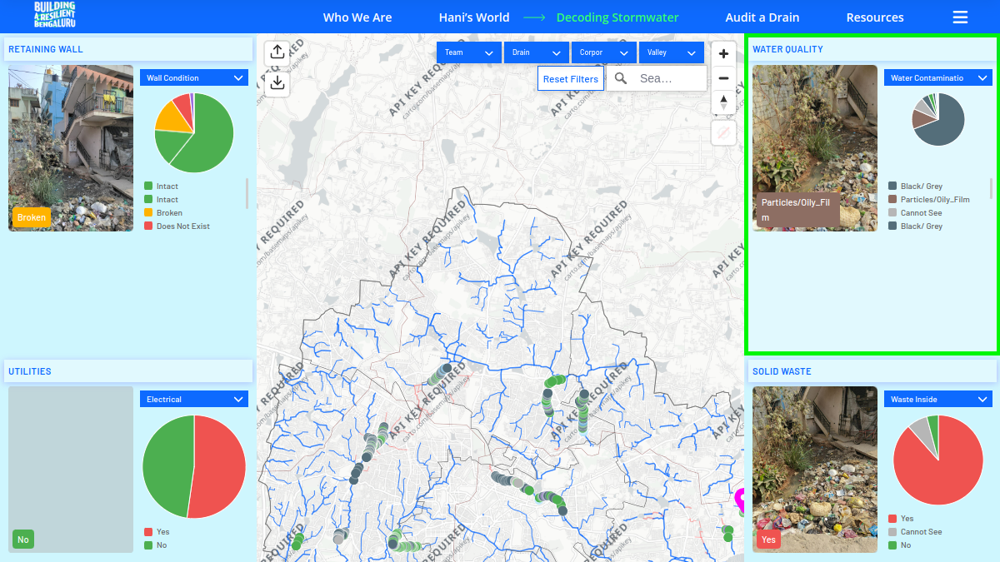
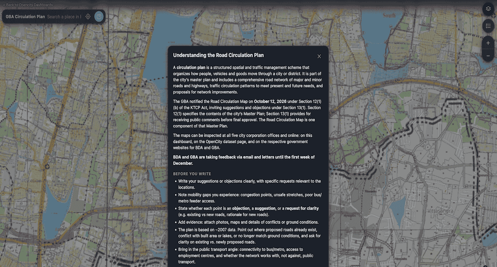

State of Bus Stops
Explore findings from a citizen-led audit of bus stop infrastructure, accessibility, safety and passenger amenities.
Explore dashboardInteractive dashboards that turn public data and citizen observations into clear, useful views of how our cities work.

Explore findings from a citizen-led audit of bus stop infrastructure, accessibility, safety and passenger amenities.
Explore dashboard
See citizen audit observations that make Bengaluru’s stormwater network visible, understandable and actionable.
Explore dashboard (opens in a new tab)
Explore the proposed road circulation network brought forth by the Bengaluru Development Authority and the Greater Bengaluru Authority.
Explore dashboard